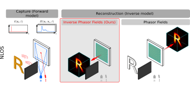

|
Jorge Garcia-Pueyo I'm a PhD candidate in Computer Graphics and Computational Imaging at Graphics and Imaging Lab (University of Zaragoza), supervised by Adolfo Muñoz. My research explores the physics and applications of light, including advanced light transport simulation, techniques for imaging around corners (non-line-of-sight) and novel touch sensors based on the time-of-flight of the light. I am also interested in problems related to Computer Vision. I am always eager to connect, exchange ideas, and keep learning. If you like something I do, just send an email! |

|
|  |
Forward and Inverse Diffraction in Phasor Fields
Jorge Garcia-Pueyo, Adolfo Muñoz Optics Express, Vol. 33(5), 2025 project page / pdf / code
|
|
OptoSkin: Novel LIDAR Touch Sensors for Detection of Touch and Pressure Within Wave Guides
Emmanuel Bacher, Sergio Cartiel, Jorge Garcia-Pueyo, Julija Stoppar, Ales Zore, Roman Kamnik, Ilze Aulika, Andrejs Ogurcovs, Jurgis Grube, Arturs Bundulis, Jelena Butikova, Meldra Kemere, Adolfo Muñoz, Martin Laurenzis IEEE Sensors Journal, Vol. 24(20), 2024
|
Miscellanea |
|
This template is a fork of Jon Barron's website. You can find this website's source code here. Do not scrape the HTML from this page itself, as it includes analytics tags that you do not want on your own website — use the github code instead. |